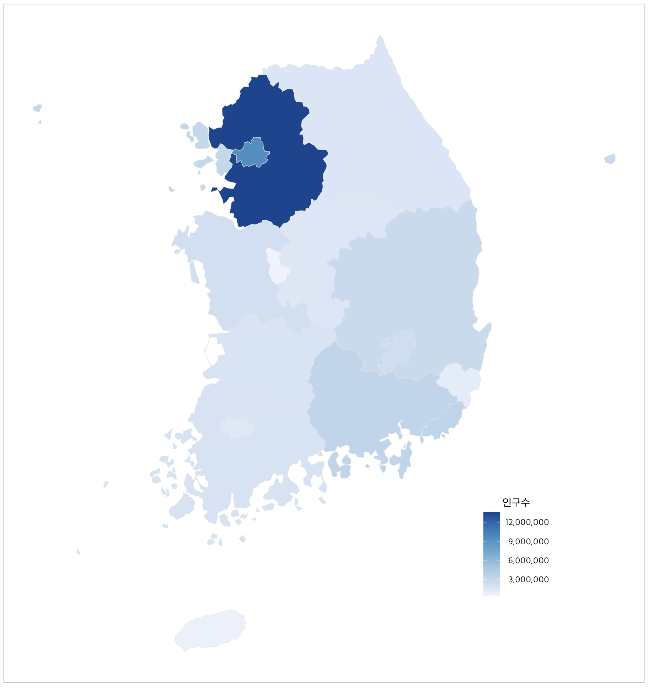

Color scales
(2023년 3월 주민등록인구 및 세대현황)
code
visualation
R
데이터 시각화 5주차 과제
# 패키지 로드
library(ggplot2)
library(dplyr)
library(colorspace)
library(geojsonsf)
library(sf)
library(stringr)
library(extrafont) # mac os 한글 깨지는 처리해주는 패키지# 데이터 로드
kor_202303 <- read.csv('/Users/jungwoolee/Desktop/college/Data Visualization/data/202303_202303_주민등록인구및세대현황_월간.csv', fileEncoding = "euc-kr")
kor_sido <- geojson_sf('/Users/jungwoolee/Desktop/college/Data Visualization/data/KOR_SIDO.json')# 데이터 전처리
kor_202303$행정구역 <- str_sub(kor_202303$행정구역, -30, -15) # 행정구역에서 글자만 추출
kor = str_replace_all(kor_202303[,2],",", "") # 쉼표(,) 제거
kor_202303 <- kor_202303 %>% mutate(총인구수 = kor) # 쉼표 제거 해준 새로운 총인구수 마지막 열에 추가
kor_202303[, "총인구수"] = as.numeric(kor_202303$총인구수) # 총인구수 숫자형 벡터로 변경
kor_202303 %>% sapply(class)
kor_202303 <- kor_202303[, -2] # 기존 X2023년03월_총인구수 열 삭제
use_map <- kor_sido
use_map$CTPRVN_CD <- paste(use_map$CTPRVN_CD, "00000000",sep = "")
names(use_map) <- c("행정구역_코드", "행정구역", "geometry", "CTP_ENG_NM") # 열 순서 바꿔주기
use_map[, "행정구역_코드"] = as.numeric(use_map$행정구역_코드) # 행정구역코드 숫자형 벡터로 변경
use_map <- use_map %>% merge(kor_202303,by="행정구역", all.x = T) # use_map과 kor_202303 병합# ggplot 그리기
use_map %>% ggplot(aes(fill = 총인구수))+
geom_sf(color = "gray90")+
coord_sf(datum = NA)+
scale_fill_distiller(
name = "인구수",
palette = "Blues", type = 'seq', na.value = 'grey60',
direction = 1,
breaks = seq(0, 400, 30) * 1e+5,
labels = format(seq(0, 400, 30) * 1e+5, big.mark = ",", scientific=FALSE), )+
theme_minimal() +
theme_light(base_family = "AppleSDGothicNeo-Regular") +
theme(
legend.title.align = 0.5,
legend.text.align = 1,
legend.position = c(.8,.2))